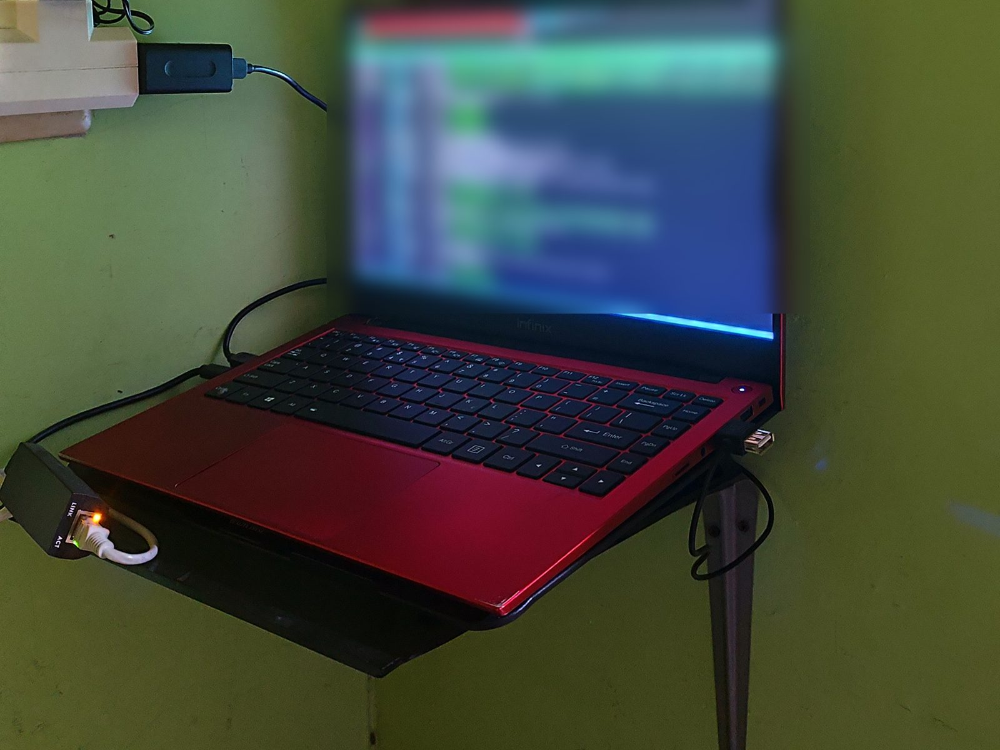

A door without a public keyhole.
My laptop reaches the server through trusted SSH keys and a private Tailscale network.
SSH keys / Tailscale / UFWHome-server experiment / Field notes
I turned an Infinix INBook X1 into a secure home server, then documented the decisions behind it.
↓
The premise
The short version
Scan the story here. Open the case study when you want the engineering evidence.
My laptop reaches the server through trusted SSH keys and a private Tailscale network.
SSH keys / Tailscale / UFWNginx routes each hostname while Docker keeps every application contained.
Docker Compose / NginxEthernet comes first, Wi-Fi can return when needed, and the battery protects short outages.
Network priority / Battery guardFor engineers and curious people
The full case study covers architecture, trust boundaries, decisions, verification, and what is still planned.
Open technical case study